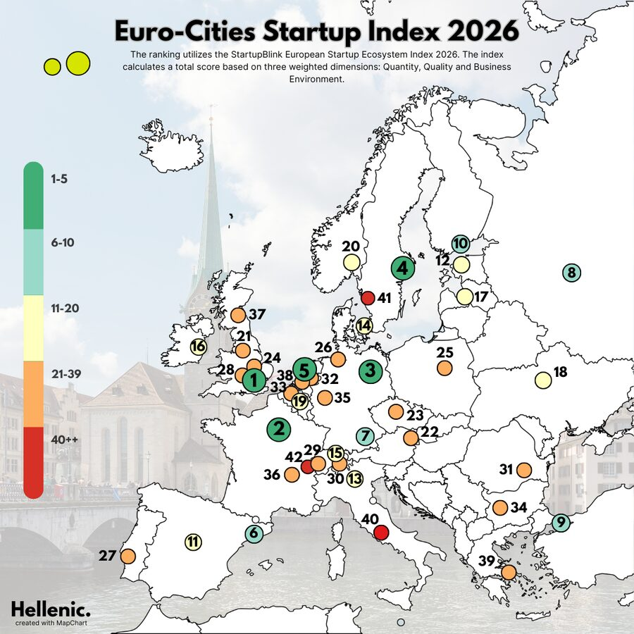
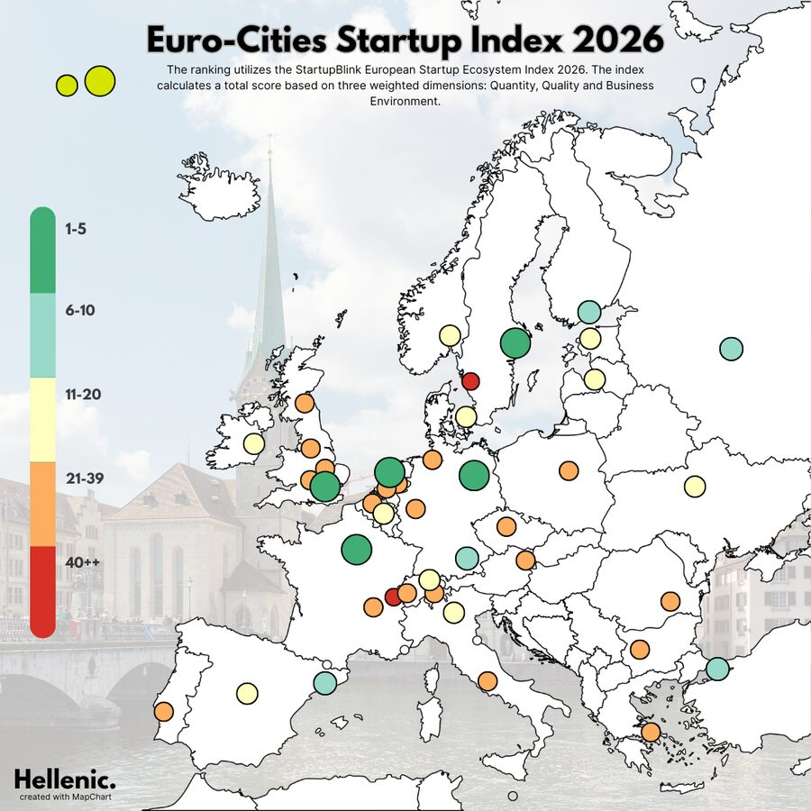
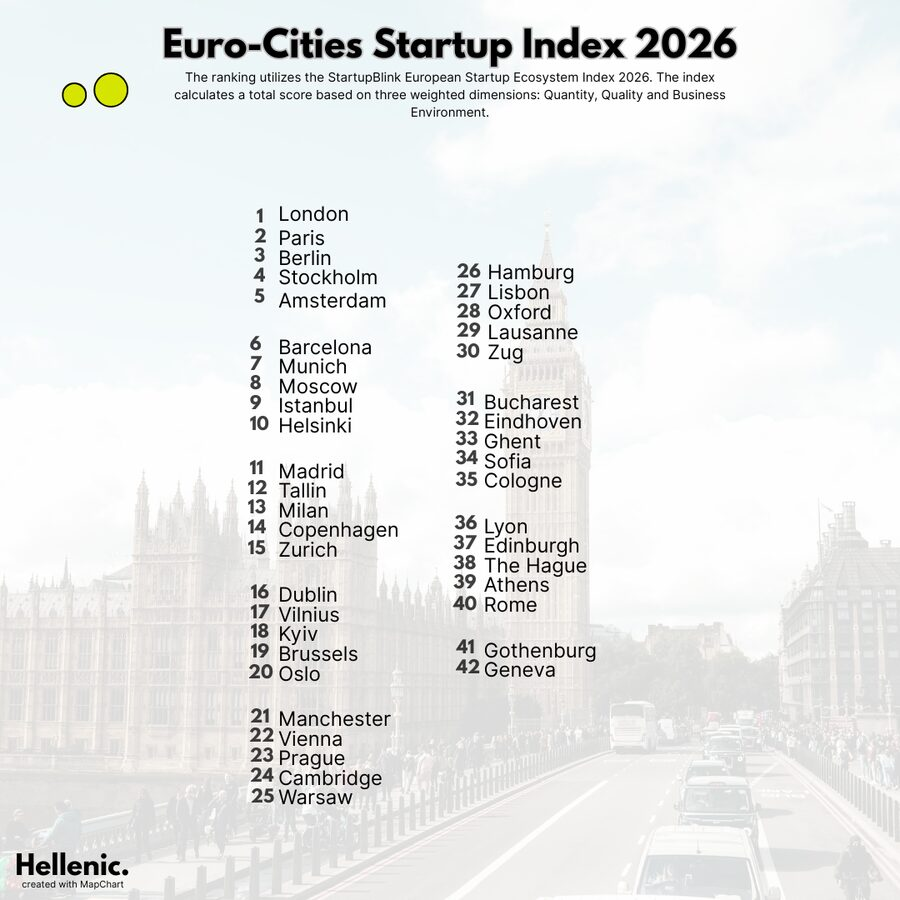
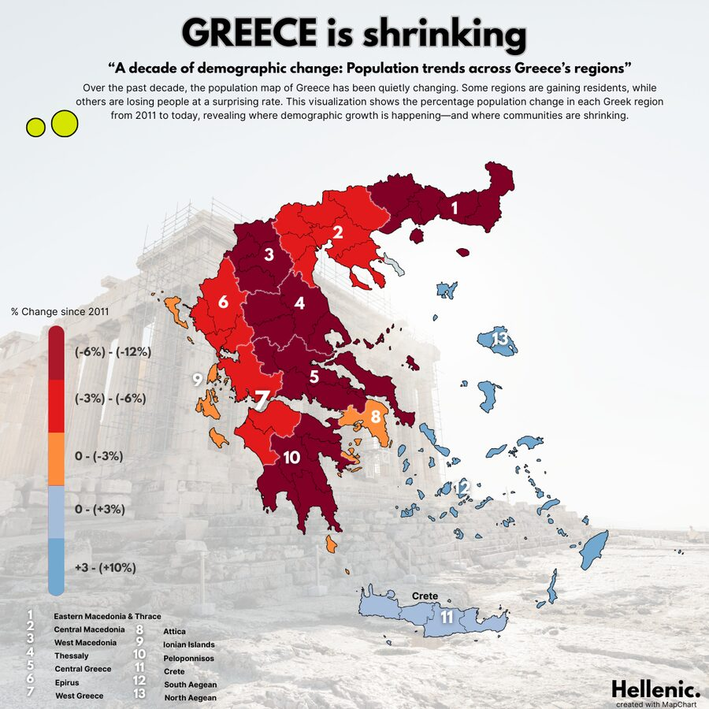

About the page
Since November 2022, a page that turns data from Wikipedia and other public sources into maps and comparison graphics about Greece and beyond. It is where my design and analytical interests meet.
Selected graphics



